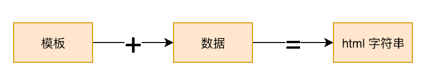

当我们使用
Vue或React时，往往会将页面拆分为各种组件，通过拼装组件来形成页面和应用，就像搭积木一样。
那么，大家有没有思考过："组件的产出是什么？"
# 组件的产出是什么
在 JQuery 盛行的年代，比起组件，“模板引擎”的概念要更加流行。
我们可以使用 lodash.template 函数来回忆一下当年是如何用模板开发一个页面的：
import { template } from 'lodash'
const compiler = template('<h1><%= title %></h1>')
const html = compiler({ title: 'My Component' })
document.getElementById('app').innerHTML = html
模板引擎的概念是：字符串 + 数据 => html。
lodash.template 函数虽然称不上是“引擎”，但足以说明问题。
我们将模板字符串传递给 template 函数，该函数返回一个编译器 compiler，只要把数据传入 compiler 函数，便能得到最终想要渲染的内容。
当数据发生变化时，我们需要使用新的数据重新编译模板：
const newHtml = compiler({ title: 'New Component' })
如果把上面的逻辑封装成一个函数，那么一个组件就诞生了：
const MyComponent = props => {
const compiler = MyComponent.cache || (MyComponent.cache = template('<h1><%= title %></h1>'))
return compiler(props)
}
MyComponent.cache = null
我们可以这样使用它：
document.getElementById('app').innerHTML = MyComponent({ title: 'MyComponent' })
TIP
完整代码&在线体验地址：https://codesandbox.io/s/m7nqlj8m9j (opens new window)
MyComponent 组件也许会带给你这样的感觉：一个组件就是一个函数，给我什么样的数据，我就渲染对应的 html 内容。
这个概念，与我们如今谈论的 Vue 或 React 并没有什么不同。所以，这 就是 组件的本质。
组件的本质虽然没变，但组件的产出却改变了。在模板引擎的年代，组件的产出是 html 字符串：

而如今的 Vue 或 React，它们的组件所产出的内容并不是 html 字符串，而是大家所熟知的 Virtual DOM。

拿 Vue 来说，一个组件最核心的东西是 render 函数，剩余的其他内容，如 data、compouted、props 等都是为 render 函数提供数据来源服务的。render 函数本可以直接产出 html 字符串，但却产出了 Virtual DOM，借助 snabbdom 的 API 我们可以很容易地用代码描述这个公式：
import { h } from 'snabbdom'
// h 函数用来创建 VNode，组件的产出是 VNode
const MyComponent = props => {
return h('h1', props.title)
}
Virtual DOM 终究要渲染真实 DOM，这个过程就可以理解为模板引擎年代的完全替换 html，只不过它采用的不是完全替换，我们通常把这个过程叫做 patch，同样可以借助 snabbdom 的 API 轻松地实现：
import { h, init } from 'snabbdom'
// init 方法用来创建 patch 函数
const patch = init([])
const MyComponent = props => {
return h('h1', props.title)
}
// 组件的产出是 VNode
const prevVnode = MyComponent({ title: 'prev' })
// 将 VNode 渲染成真实 DOM
patch(document.getElementById('app'), prevVnode)
当数据变更时，组件会产出新的 VNode，我们只需再次调用 patch 函数即可：
// 数据变更，产出新的 VNode
const nextVnode = MyComponent({ title: 'next' })
// 通过对比新旧 VNode，高效地渲染真实 DOM
patch(prevVnode, nextVnode)
TIP
完整代码&在线体验地址：https://codesandbox.io/s/mq0q8r50w8 (opens new window)
以上就是我们要达成的共识：组件的产出就是 Virtual DOM。
为何组件要从直接产出 html 变成产出 Virtual DOM 呢？其原因是 Virtual DOM 带来了 分层设计，它对渲染过程的抽象，使得框架可以渲染到 web(浏览器) 以外的平台，以及能够实现 SSR 等。
至于 Virtual DOM 相比原生 DOM 操作的性能，这并非 Virtual DOM 的目标，确切地说，如果要比较二者的性能是要“控制变量”的，例如：页面的大小、数据变化量等。
# 组件的 VNode 如何表示
TIP
在后续行文时，将统一使用 VNode 来简称 Virtual DOM 。
VNode 是真实 DOM 的描述，比如我们可以用如下对象描述一个 div 标签：
const elementVnode = {
tag: 'div'
}
想要把 elementVnode 渲染成真实 DOM，我们还需要一个渲染器(Renderer)：
function render(vnode, container) {}
渲染器接收两个参数，分别是将要渲染的 vnode 和 元素挂载点(真实 DOM 被渲染的位置)。
为了渲染如上的 div 标签，我们可以这样调用 render 函数：
// 把 elementVnode 渲染到 id 为 app 的元素下
render(elementVnode, document.getElementById('app'))
render 函数的实现也很简单：
function render(vnode, container) {
mountElement(vnode, container)
}
function mountElement(vnode, container) {
// 创建元素
const el = document.createElement(vnode.tag)
// 将元素添加到容器
container.appendChild(el)
}
如上，在 render 函数内调用了 mountElement，它的作用是根据 VNode 创建真实 DOM 并将其添加到容器中。
这段代码对于标准 html 标签是可以正常工作的(不考虑 SVG)，但并不适用于组件。为了能够渲染组件，我们需要思考：组件的 VNode 应该如何表示？
对于 html 标签的 VNode 来说，其 tag 属性的值就是标签的名字，但如果是组件的话，其 VNode 中 tag 属性的值应该是什么呢？
很简单，我们可以将其指向组件自身。假设我们有如下组件：
class MyComponent {
render() {
// render 函数产出 VNode
return {
tag: 'div'
}
}
}
如上，我们使用 class 定义了一个类，它是一个组件(有状态组件)，我们可以使用如下 VNode 来描述它：
const componentVnode = {
tag: MyComponent
}
如上，直接将 tag 属性的值指向组件自身。但想要正确地渲染该组件，我们还需要修改 render：
function render(vnode, container) {
if (typeof vnode.tag === 'string') {
// html 标签
mountElement(vnode, container)
} else {
// 组件
mountComponent(vnode, container)
}
}
如上，通过 判断 vnode.tag 是否是字符串 来区分：一个 VNode 到底是 html 标签还是组件。如果是组件的话，调用 mountComponent 函数挂载组件，而非 mountElement，如下是 mountComponent 函数的实现：
function mountComponent(vnode, container) {
// 创建组件实例
const instance = new vnode.tag()
// 渲染
instance.$vnode = instance.render()
// 挂载
mountElement(instance.$vnode, container)
}
道理很简单，由于 vnode.tag 指向组件类，所以我们创建一个组件实例，接着调用其 render 函数产出 VNode 并将其添加到实例属性 instance.$vnode，最后借用 mountElement 函数完成标签的挂载即可。
实际上为了便于理解，本节代码的简化程度很大，更加详细严谨的代码会在后续的具体章节中体现。不过这足以说明问题：可以让 VNode 的 tag 属性指向组件本身，从而使用 VNode 来描述组件。
TIP
完整代码&在线体验地址：https://codesandbox.io/s/8817m3zz5j (opens new window)
# 组件的种类
大家可能会注意到，在上文中，采用了两种不同的方式来描述组件。
第一种方式是使用一个普通的函数：
function MyComponent(props) {}
第二种方式是使用一个类：
class MyComponent {}
实际上它们分别代表两类组件：函数式组件(Functional component) 和 有状态组件(Stateful component)。
它们的区别如下：
函数式组件：
- 是一个纯函数
- 没有自身状态，只接收外部数据
- 产出
VNode的方式：单纯的函数调用
有状态组件：
- 是一个类，可实例化
- 可以有自身状态
- 产出
VNode的方式：需要实例化，然后调用其render函数
在后续渲染器的相关章节中，会再次讲述 有状态组件 与 函数式组件 的原理和异同，那时你的理解会更加深刻。